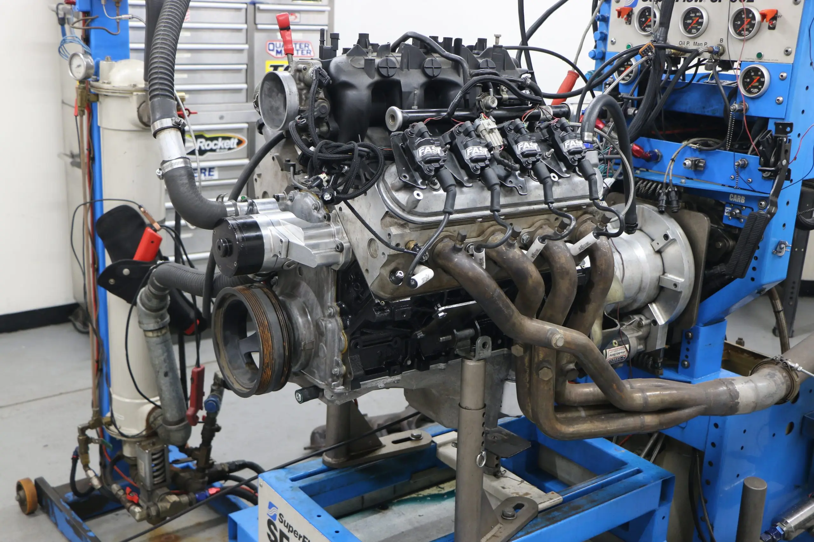
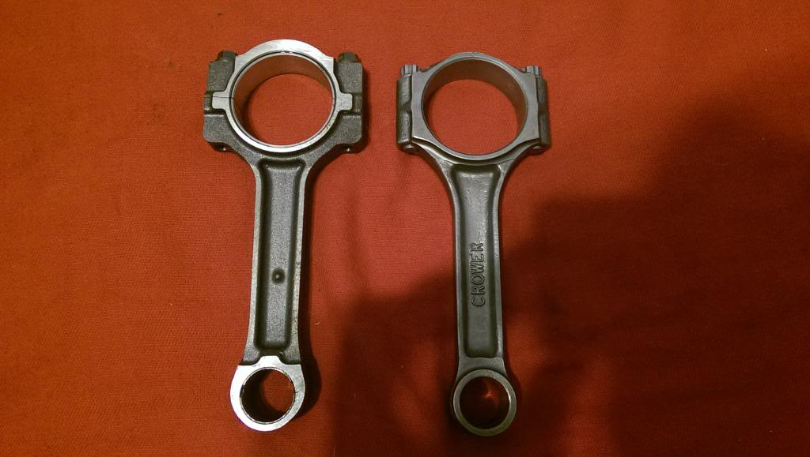
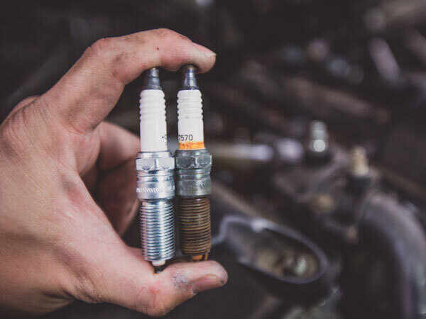

Budget Builds for LS Engines
This page focuses on common iron and aluminum block engines often found in GM Trucks. Some examples of these engines include the LM7 5.3, LY6 6.0, and the LQ4/LQ9 6.0.
Maintenance always comes first, choosing an engine that has been taken care of and purchased from a reliable source is key to starting and keeping things in your budget.
The Definitive Guide to Choosing a Budget LS Engine
This guide provides a definitive, step-by-step technical breakdown for choosing the best budget LS powerhouse for your build.
Step 1: Decide on a budget, application and goal for your engine build
- Your Budget:A realistic budget for a complete, running swap typically starts around $2,500 to $5,000, including the engine, transmission, wiring, fuel system, and ECU. The engine itself can range from a few hundred to over a thousand dollars. A lower initial engine cost allows for more budget allocation to crucial supporting components like the fuel system and valvetrain.
- Application:Consider the type of vehicle you are installing the LS engine into (e.g., car, truck, off-road vehicle) and how you plan to use it (daily driver, weekend cruiser, etc.). This will influence your choice of engine and supporting components.
- Power Goals:Define your desired horsepower and torque targets. This will help you choose the right engine variant and any necessary modifications.
Step 2: Deciding on which LS generation you will build your engine on
The most significant fork in the road for budget LS engines is the generation. This distinction is paramount as it directly impacts strength, sensor compatibility, and tuning.
| Feature | Gen 3 | Gen 4 |
|---|---|---|
| Years | 1999-2007 | 2005-2013 |
| Crank Sensor | 24x Reluctor Wheel | 58x Reluctor Wheel |
| Cam Sensor | Rear of the block, behind the intake | Front of the block, behind the timing cover |
| Connecting Rods | Lighter, less robust design | Thicker, full floating wrist pins |
| Knock Sensors | In the valley cover | On the side of the block |
Key Takeaway:For boosted applications targeting over 600 horsepower, a Gen 4 engine is highly recommended due to its significantly stronger connecting rods. For naturally aspirated builds or mild boost, a Gen 3 engine is a perfectly viable and often cheaper option.
Step 3: Select your displacement
Your power goals will guide your choice of displacement. Here’s a technical breakdown of the most common and affordable truck engines:
4.8L (LR4 - Gen 3, LY2/L20 - Gen 4)
The 4.8L is a budget builder's hidden gem, especially for boost. Its shorter 3.267-inch stroke results in a better rod-to-stroke ratio, making it a durable, high-revving engine that is exceptionally resistant to detonation.
- Best for:High-RPM naturally aspirated builds in lightweight cars or budget turbo builds aiming for 600-700 horsepower.
- Expect to Pay:$200-500
5.3L (LM7 - Gen 3, LY5/LMG - Gen 4)
This is the most common and versatile LS engine. It offers a significant jump in torque over the 4.8L with its 3.622-inch stroke. The Gen 4 versions (LY5, LMG) are particularly desirable as they combine the affordability of the 5.3L with the stronger Gen 4 internals.
- Best for:An all-around great choice for both mild NA builds (350-400 hp) and robust turbo applications (700-800 hp on a stock Gen 4 bottom end).
- Expect to Pay:$300-700
6.0L (LQ4/LQ9 - Gen 3, LY6 - Gen 4)
The 6.0L engines provide the most displacement and power potential in the iron block family. The larger 4.00-inch bore unshrouds the valves, allowing for better cylinder head airflow.
- Best for NA Power:The LQ9 is the top choice.
- Best for Boost:The LQ4 (budget) or LY6 (high-power) are ideal.
- Expect to Pay:$700-1500
Step 4: Shop around and inspect your options
You've decided what engine you are looking for. Now it's time to explore your options. Check local classifieds, online marketplaces, and junkyards for potential candidates. Don't hesitate to reach out to sellers and ask questions about the engine's history, condition, and any modifications that may have been made.
Step 5: Inspect the engine before purchase
You've identified your target engine. Now, here's how to assess a potential candidate:
- Check the Oil:Pull the dipstick. Milky oil indicates a blown head gasket or cracked head. Excessive metal flake is a sign of bearing failure.
- Inspect the Spark Plugs:Remove a spark plug to check for signs of oil fouling, carbon buildup, or coolant contamination.
 - Perform a Rotation Test:With the spark plugs removed, use a ratchet to turn the crankshaft. Listen for any unusual noises, which could indicate internal damage.
- Look for External Damage:Check the engine block and surrounding components for any signs of damage, such as cracks, dents, or rust.
- Compression Test (If Possible):Use a compression gauge to check the cylinder pressure. This can help identify worn rings or valves.